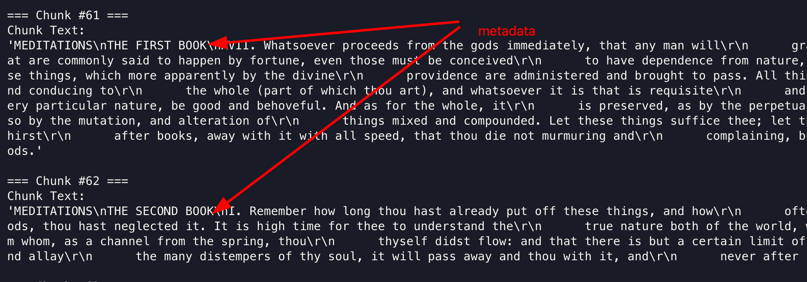
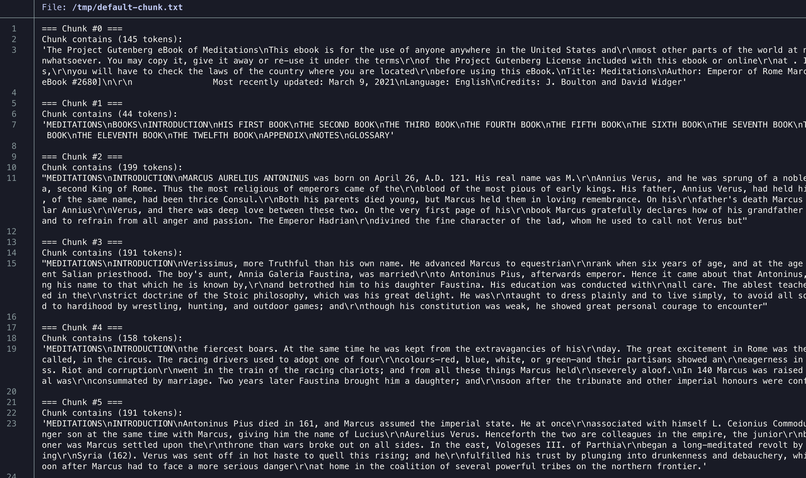

Hybrid Chunking in Docling
A chunker is a Docling abstraction that, given a DoclingDocument, returns a stream of chunks, each of which captures some part of the document as a string accompanied by metadata(location of chunk in document, size, and more).
You have already seen many examples in the previous sections about Docling’s awareness of a document’s hierarchical structure. Docling provides a default hierarchical chunker that splits text in a document based on headings, sections, paragraphs, tables and other objects.
The HybridChunker uses a hybrid approach, by applying tokenization aware refinements on top of document based hierarchical chunking.
Hybrid Chunking Process
The Docling hybrid chunker provides a sophisticated, multi-step process for breaking down large documents into smaller, more meaningful pieces. The hybrid chnuker combines a high level understanding of a document’s structure with a low level awareness of the token based limitations of LLMs.
The hybrid chunker first employs hierarchical chunking, that is, the inherent structure of the document is analyzed and the text is split accordingly. Instead of arbitrarily splitting the text into fixed-size blocks, it identifies and separates content based on its logical organization in the document hierarchy. This means that headings, subheadings, paragraphs, lists, and tables are recognized as distinct units.
By preserving this natural hierarchy, the resulting chunks are more coherent and contextually complete, preventing sentences from being abruptly cut off and related ideas from being scattered across different segments. This method is particularly effective for structured documents like reports, articles, and technical manuals, as it maintains intended organization of information.
Following this initial structural breakdown, tokenization aware refinements are applied. This second step addresses the practical constraints of LLMs context windows. The refinements involve several key actions:
-
Splitting Oversized Chunks: If a chunk created during the hierarchical step exceeds the maximum token limit of the target model, it is further divided. This ensures that every chunk can be processed by the model without truncation, which would lead to a loss of information.
-
Merging Undersized Chunks: Conversely, to avoid an overabundance of very small, potentially less informative chunks, the system may merge adjacent, undersized chunks. This is often done when the combined chunks remain within the token limit and are semantically related, for instance, consecutive short paragraphs under the same sub-heading.
-
Boundary Optimization: The process of splitting and merging is not random. It is "tokenization-aware," meaning it considers the token boundaries to make more intelligent decisions. For example, a split might be made at a sentence boundary rather than in the middle of a sentence to preserve grammatical integrity.
In essence, Docling’s Hybrid Chunking provides the best of both worlds. The document based hierarchical approach provides semantically rich and contextually sound chunks, while the tokenization aware refinements ensure these chunks are optimized for the practical requirements of AI models. This dual-layered strategy results in a more effective and efficient processing of documents, leading to improved performance in tasks such as retrieval-augmented generation (RAG), question answering, and document summarization.
| The HybridChunker defaults to using sentence-transformers/all-MiniLM-L6-v2 as the default tokenizer. This is a popular and generally effective model for sentence similarity tasks, but it may not be the optimal choice for all applications. You can use other tokenizers from HuggingFace depending on your needs. |
Lab: Applying Hybrid Chunking
Pre-requisites
-
The Docling Python library must be installed as outlined in the previous sections using
pipin a Python virtual environment -
Git CLI to clone the sample data files from GitHub
-
Visual Studio Code, or other editors to edit Python code
Steps
-
If you have not already done it, clone the Git repository containing the sample documents that should be converted, to a folder of your choice.
$ git clone https://github.com/RedHatQuickCourses/genai-apps.git -
All the sample input files and code is in a folder called
dataprep. Change to this folder in the terminal.$ cd genai-apps/dataprep -
If you have previously created a virtual environment and installed Docling, activate the venv.
$ source venv/bin/activateYour prompt should change to indicate that you are now running in an isolated virtual environment.
-
Inspect the
hybrid-chunking.pyfile in VS Code. The input document issample-data/pg2680.html. The tokenized chunks will be printed to the terminal.... input_file = Path("sample-data/pg2680.html") ... -
Scroll all the way to the bottom of the file. This file contains two methods demonstrating the hybrid chunker with default settings, and a second method that customizes the tokenizer with the number of tokens per chunk . The second method is commented out initially.
... if __name__ == "__main__": default_chunker() #customized_chunker() ... -
Inspect the
default_chunker()method. It uses the defaultHybridChunker()options with no customization.... def default_chunker(): chunker = HybridChunker() (1) chunk_iter = chunker.chunk(dl_doc=doc) (2) ...1 Instantiate the default HybridChunkerinstance2 Pass the converted DoclingDocumentobject to the chunker -
Run the program. You can safely ignore any warnings emitted. The chunks are printed to the terminal. You can redirect the output to a file and inspect it.
$ (venv) python3 hybrid-chunking.py ...Notice how the chunker has split the text roughly based on the hierarchy of the document (chapters, paragraphs) and augmented the output with metadata about where the chunk is located in the document hierarchy.
Figure 2. Default Hybrid Chunker Output -
Next, inspect the
customized_chunker()method. Note the use of thesentence-transformers/all-MiniLM-L6-v2tokenizer and theMAX_TOKENSsetting. Pss the custom tokenizer instance to theHybridChunker.... tokenizer = HuggingFaceTokenizer( tokenizer=AutoTokenizer.from_pretrained(EMBED_MODEL_ID), max_tokens=MAX_TOKENS ) chunker = HybridChunker( tokenizer=tokenizer, merge_peers=True, ) ... -
Before running the script, comment the first method, and uncomment the second method call at the bottom of the file as follows:
... if name == "main": #default_chunker() customized_chunker() -
Run the script once again. Notice how the token count is always less than
MAX_TOKENS. You can experiment with different token sizes and re-run the script.Figure 3. Customized Hybrid Chunker